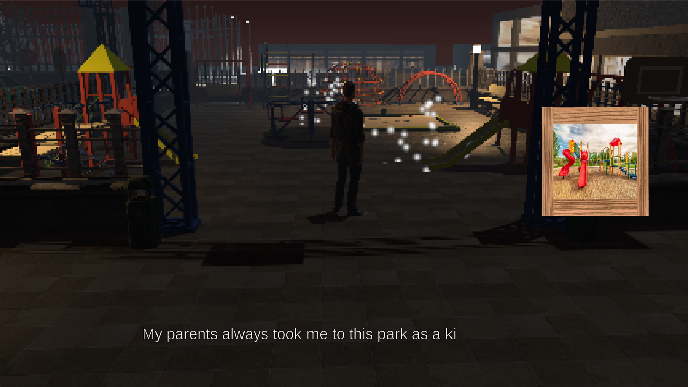

Trip by 8-Bit
A 3d/2d game experience. After a sad day, Noah walks back home, recollecting memories and reminiscing about the good old days.
Take a walk back along with him on this interactive experience. A love letter to games, childhood, and life.
The game uses narrative and an interesting twist on graphics to help evoke a nostalgic feeling.
Goal
Goal: I wanted to be in charge of narrative design and writing in this game. I coded the dialogue system and interactable triggers that play out dialogue for the story. My main priority was to design and write a narrative that parallels the journey back home and elicit a nostalgic feeling through memories.Development
Narrative Design
This was a class project in collaboration with other students. The goal of the assignment was to create a game based on an assigned emotion. The emotion my group was assigned was “Nostalgia”. I took on the role of writer, narrative designer, UI/UX designer, and did some programming, mostly for UI and narrative systems.During brainstorming, we settled on using graphics and story to illustrate the passage of time, the game transitioning from 3d to 2d. I decided on the idea of having our protagonist walking back home from a funeral, reflecting and thinking as he walks through familiar places with the graphics slowly devolving overtime from full 3d to a top-down pixel 2d game.
The purpose of this design is to have the game’s change in art style parallel the story of going back to simpler times. Since we wanted to focus on the graphics and narrative, the gameplay was simplified to a walking simulator with the goal of navigating a map and interacting with objects or items to trigger introspective thoughts.


I oversaw writing and narrative design, which were the core pillars of the game since we wanted to have a more thoughtful and introspective experience when players play the game. This way it should evoke a nostalgic feeling. The game was design in 4 maps:
- The first map starts off in 3d set in the city. The player goes through the graveyard, then the town, then the park, and then exits the map to go toward train station. Here, the protagonist reflects on the time his family spent in the city.
- The second map is set in the protagonist’s hometown. The protagonist comments on how familiar the scenery is with very little changes. The art style sifts drastically as the game becomes more pixelated throughout the walk.
- The third map is set within the player’s house, specifically the first floor. The game shifts to a 2d pixel art style, eliciting the sense of nostalgia and familiarity. The player can also talk with the family members from the funeral.
- The fourth map is set in the upstairs, where the player navigates through bedrooms and finds his dad’s old game console. The game ends with a nostalgic sentiment of “good old times”, reflecting the protagonist’s feelings on his passed away father, the good memories he had with him, and the time of simpler games.
When writing the story and dialogue, I tried to have the protagonist talk in a somber but thoughtful tone. To guide the player to specific points in the map, I created a cluster of white particles to catch the player’s attention. The particle clusters would be placed throughout the map at locations like a restaurant or park equipment to trigger a thought. Sometimes, a low resolution picture would accompany the thought, to aid to the experience.

Programming
The main programmer of the group created a system to adjust the pixelation effect of the screen. He made it easy for the designers to adjust the pixelation effect through a slider and variables. I added onto the system by creating triggers that would access the pixelation effect manager and adjust the pixelation gradually though the game. The triggers are basic invisible box colliders that are placed throughout the 3d maps to ensure a steady pixelation effect during gameplay.I also programmed the dialogue system. This includes the dialogue that shows up when the player interacts with a thought object, the scrolling text speed, the system to write strings of dialogue and parse it one at a time, and the UI.I also designed the UI to be simple yet readable during gameplay since the game is set during the night. The game opens up with settings that allow the user to test the font size and text speed, which is set to the dialogue manager that handles these variables during runtime.